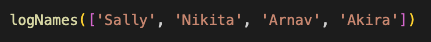
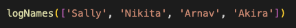

Javascript Fundamentals
How would you describe Javascript and it's relationship to HTML and CSS?
Did you ever watch the movie Mean Girls? Mean girls was a movie that characterised the nature of popularity in high school. The cool girls and the no-so-cool girls. In this movie the no-so-cool girl found herself hanging in the popular girl group.
The relationship between Javascript, HTML and CSS can be described a lot like this odd group of 'friends'.

Let me break it down:
Cady is your HTML. She's the smarts, but not seen as the 'cool' girl. She carrys the bulk if not all the information, but unfortuantely she has no style. Shes pretty quiet and looks to the other girls for direction. She could do it herself, but the outcome would be pretty lame.
Karen and Gretchen are your CSS. Stylish but with no direction. Basically they look good, but there is not a lot of smarts to go with it. Without HTML (or Javascript) looking to them for their styling, they would be all dressed up with no where to go.
Lastly, Regina she is your Javascript. She is the one pulling the strings and getting things done. She has over control over what HTML (Cady) and CSS (Karen & Gretchen) do, what they look like and what they say. And because she is the head of the friends group, she has the power at anytime to change what they say, how they look or what they do.

The relationship between Javascript, HTML and CSS can be described a lot like this odd group of 'friends'.
(From left: Cady, Karen, Gretchen, and Regina George)
Let me break it down:
Cady is your HTML. She's the smarts, but not seen as the 'cool' girl. She carrys the bulk if not all the information, but unfortuantely she has no style. Shes pretty quiet and looks to the other girls for direction. She could do it herself, but the outcome would be pretty lame.
Karen and Gretchen are your CSS. Stylish but with no direction. Basically they look good, but there is not a lot of smarts to go with it. Without HTML (or Javascript) looking to them for their styling, they would be all dressed up with no where to go.
Lastly, Regina she is your Javascript. She is the one pulling the strings and getting things done. She has over control over what HTML (Cady) and CSS (Karen & Gretchen) do, what they look like and what they say. And because she is the head of the friends group, she has the power at anytime to change what they say, how they look or what they do.
What is 'control flow' and 'loops'?
Control flow is the sequence in which instructions or functions in your code are executed. This allows us to know and/or control the order in which functions happen.
Loops is a sequence of instructions that continually repeat until it has met an end condition.
Think of solving a puzzle. You go through the repeatative steps of flipping, looking, placing pieces until the puzzle has been solved.
How would you explain the DOM?
The Dom to me is like the puppeteer pulling the strings.
When you think about a website. The DOM is the thing that can parses the current version of a website with all its moving parts. It allows you to scan all elemnets across a website, pull them out, and view information across any and all documents held within.
The DOM can access all of these DOM elements otherwise known as nodes (which are object representations) and can easily manipulate (i.e. add remove or modify) thsoe elements. Common things you would manipulate would be tags, classes and IDs.
What is the difference between an 'array' and 'object'?
Arrays hold a collection of data that is stored in a particular sequence, and because of the sequence we can use indexies to call upon one, more or all data within an array.
Arrays can hold different data types e.g. String, Variables, and Boolean.

Objects however, are a bit harder to explain. Think of the objects in the room around you. They are individual items that stand alone, but are within the same room with other objects.
There are different types of objects and each perform a different role.
In programming, objects work much the same. An object could be a variable, and data structure, a function or a method.
What is a function and why are they useful?
Functions are sections of code that perform specific tasks. Whats useful about a function is that it can be called on as many times as you need, instead of having to continually write out the same code over and over again.
There are two ways that you use a function. One to defines, and two to calls.